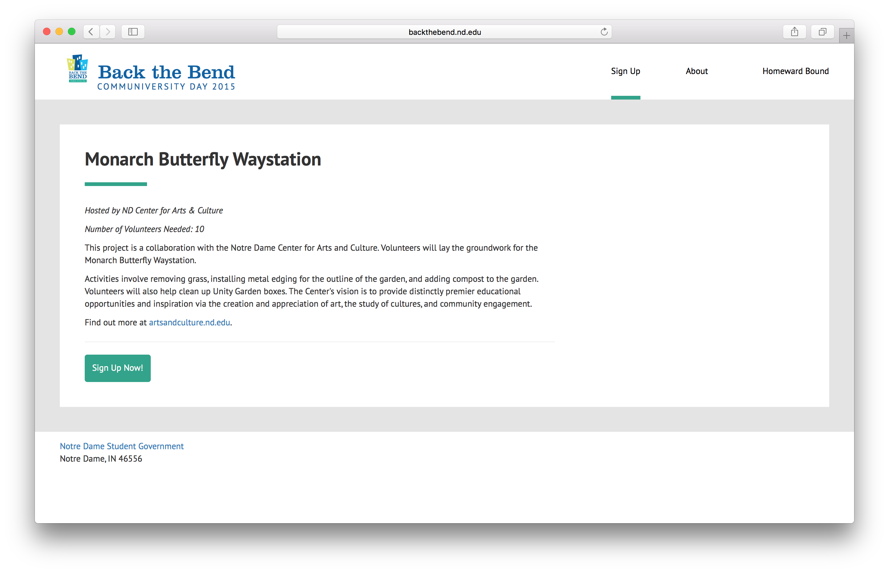
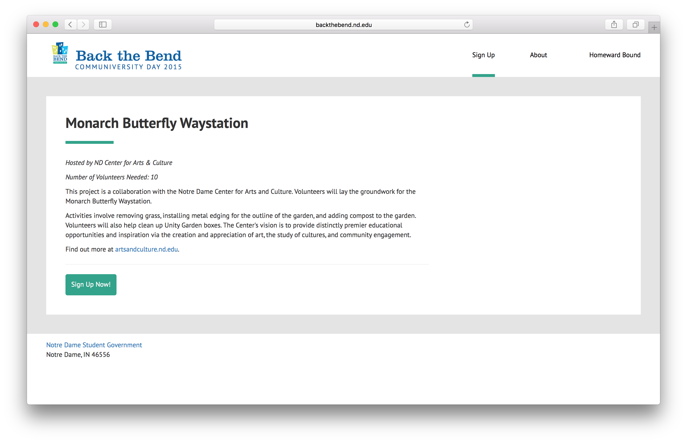

Back the Bend
design and implement a modern website from scratch in a week
One of my responsibilities as the Director of Campus Technology of Notre Dame Student Government is to build websites for student government initiatives. Back the Bend is a community-service day that our student government organizes every year, and this year I worked with our Director of Communcations to design and implement its website from scratch, in just over a week.
 Service projects page

Project detail page
Service projects page

Project detail page
 About page
About page
Check out the website here.